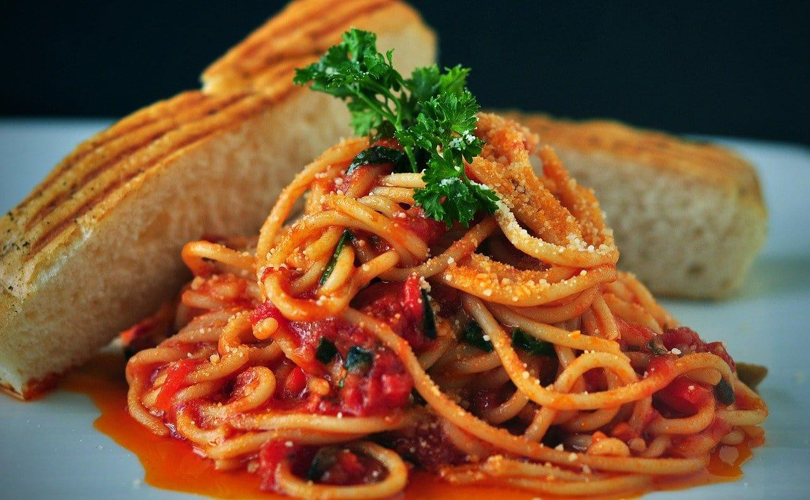

- Preheat the oven to 400ºF. Dice the red onion, zucchini, yellow squash, and bell pepper into 1-inch pieces. Spread the diced vegetables out over a large baking sheet. Drizzle with oil and a pinch of salt and pepper. Toss until all the vegetables are coated in oil.
- Roast the vegetables in the preheated oven, stirring once half way through, for about 45 minutes or until the vegetables are soft and the edges are brown and caramelized.
- While the vegetables are roasting, begin the red sauce. Finely dice the yellow onion and add it to a sauce pot with the butter. Sauté for a few minutes, or until the onion is soft. Add the crushed tomatoes, tomato paste, Italian seasoning, salt, and water.
- Stir the sauce to combine. Allow the sauce to come up to a simmer, then turn the heat down to low and let the sauce simmer, stirring occasionally, until the vegetables are finished roasting (about 30 minutes).
- In a medium bowl, stir together the ricotta cheese, 1 cup of the shredded Italian cheese blend, and ¼ tsp each of salt and pepper.
- Bring a large pot of water to a boil for the penne. Once boiling, add the penne and continue to boil until the pasta is tender. Drain the penne in a colander, then return it to the pot with the heat turned off.
- Stir one cup of the red sauce into the drained pasta to coat the pasta in flavor. Add the roasted vegetables to the remaining red sauce and stir to combine.
- To layer the casserole, place half of the sauce coated penne in the bottom of a 9x13" or 3 quart casserole dish. Add half of the cheese mixture on top in dollops, followed by half of the roasted vegetable and red sauce mixture. The ingredients do not need to create a solid layer or completely cover the previous layer. Repeat with a second layer of pasta, cheese, and vegetable red sauce. Finally, top the casserole with the second cup of shredded Italian cheese blend.
- Cover the casserole with foil, making sure it doesn't touch the cheese on top. Place the casserole in the oven (still turned on to 400ºF) and bake for 35 minutes. After 35 minutes, remove the foil and switch the oven from bake to broil. Broil the top of the casserole to brown the cheese for 3-5 minutes (watch closely as broilers can vary quite a bit from oven to oven). Top with chopped parsley if desired and serve!

Ingredients
Qty
Yellow Onion
1
Butter
2 Tablespoon
tomatoes
28oz
salt
1/4 Tablespoon
Water
1/2 Cup